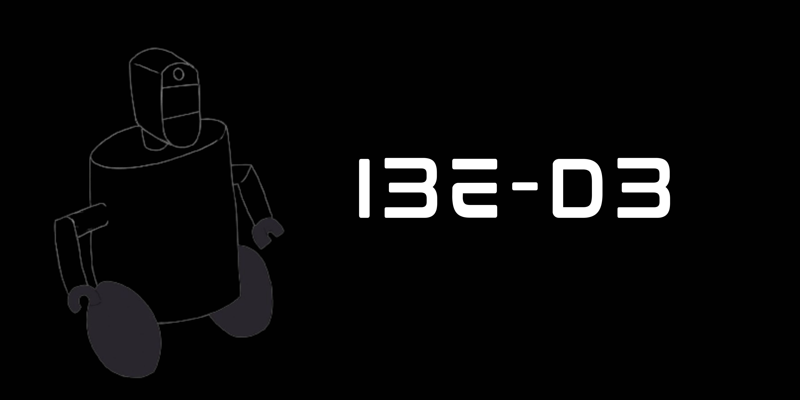
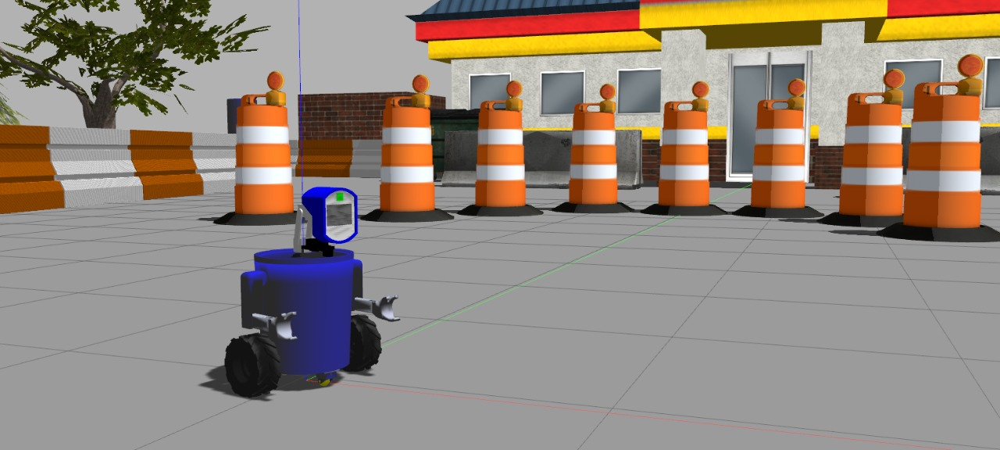
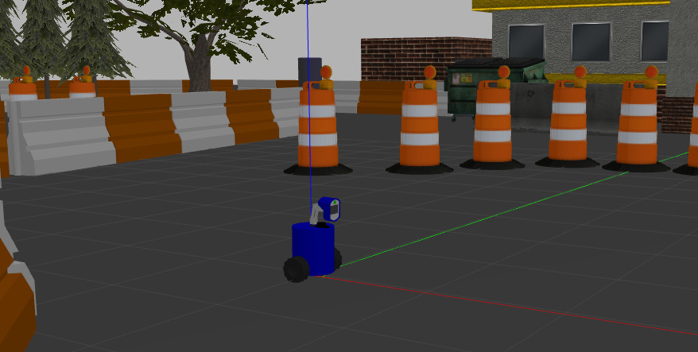
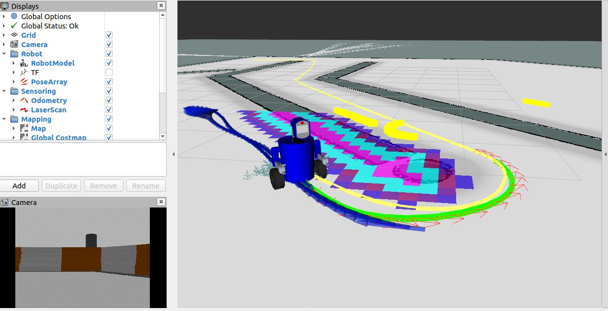
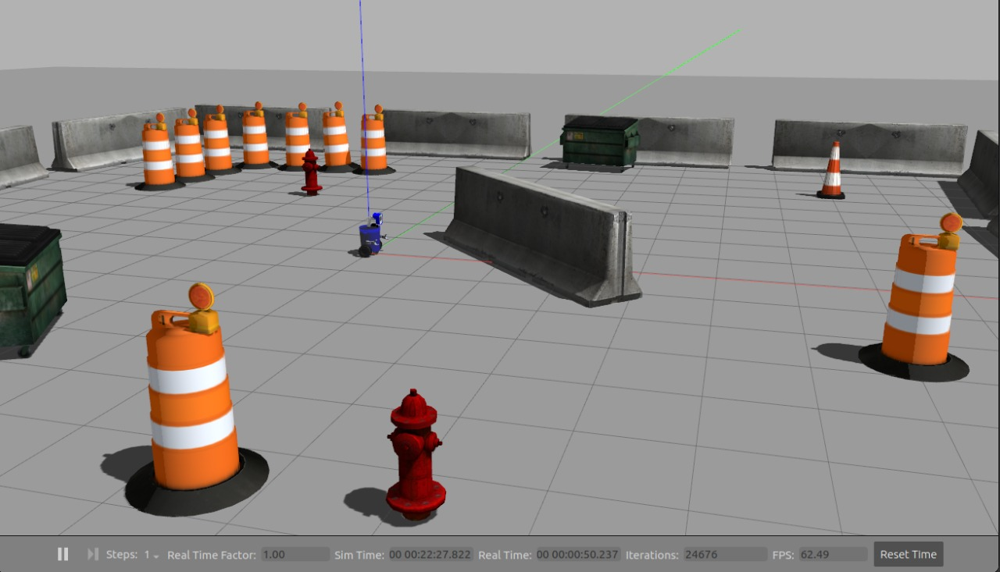
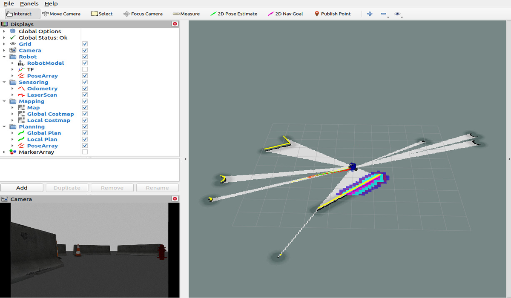
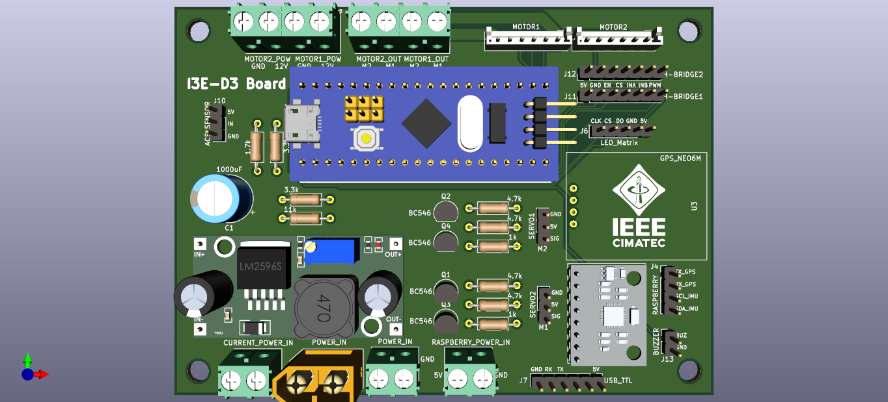

Project informations
- Category: Robot
- Function: Marketing for the student branch and object of study for robotics.
- Project date: 2019- 2022
- Project URL: https://ieeecimatec.github.io/project-i3e_d3/
PROJECT I3E-D3
What is the I3E-D3?
The I3E-D3 will be the mascot of IEEE CIMATEC, an autonomous robot that will also serve as a marketing tool for our Branch, implementing new functionalities to the robot.O I3E-D3 é o mascote do IEEE CIMATEC, um robô autônomo utilizado também como ferramenta de marketing para nosso Ramo. Além disso, a ideia do projeto é que ele possa ser utilizado pelos voluntários da RAS para o aprendizado de robótica em uma plataforma física, implementando novas funcionalidades ao robô.How did it come about?
The idea for the project came from the I3E-D2, a very simple robot (inspired by R2D2), built by us a few years ago, and presented at IEEE DAY 2018. So, at the end of 2019, we decided to design a more complex robot, standalone and with more features.The idea for the project came from the I3E-D2, a very simple robot (inspired by R2D2), built by us a few years ago, and presented at IEEE DAY 2018. So, at the end of 2019, we decided to design a more complex robot, standalone and with more features.Development
software
All robot software development was done using the ROS Noetic robotics framework. ROS is a set of libraries and software tools that help in building robotic applications, containing several packages and state-of-the-art algorithms, drivers, visualization and development tools, and many other things that facilitate the development of robots.Implemented features:
Teleoperation: Using a generic Joystick control, the D3 can be remotely controlled and navigate the environment;
Location: As the D3 moves around the environment (either by autonomous navigation or teleoperation), it is able to locate itself on a predefined map, or even locate itself while mapping the environment, which is called SLAM - Simultaneous Localization And Mapping ;
Mapping: D3 is able to map a region as it moves through it. This is possible thanks to its LIDAR sensor, which gives the robot information about the environment around it;
Autonomous Navigation: The D3 uses the ROS Navigation Stack to autonomously navigate the environment. This can be done either with a predefined map (mapped by itself), avoiding possible new obstacles or people, which were not contained in the initial map, or even without any map;
Exploration: Exploration consists of autonomous navigation without a predefined map, so mapping is done as you navigate. Exploration ends when D3 is able to map the entire environment around it, saving the map to a file so it can be used later.
Eletronics
For the electronics of the I3E-D3, two Printed Circuit Boards (PCBs) were developed: a main board called the Main Board, containing the main components of the board (microcontroller, power input, DC-DC converter, connectors for motors and -H, GPS, IMU, and others), and another board called the Face Board, containing the circuits for operating the LED arrays of the robot's face, which communicates with the main board. The microcontroller used for the project was the STM32F103C8T6, popularly known as bluepill. It communicates via Serial with a Raspberry Pi 3, which is the controller responsible for the robot's operation, using ROS.CAD
The project's CAD was responsible for creating all the robot parts - from the arms and head to the internal fixture parts. For modeling the parts and assembling the robot, SolidWorks and OnShape were used. After being modeled, the parts were printed in 3D, and from the 3D model of the robot, it was possible to create the URDF (the description of the robot) for simulation.Results obtained
Project finished! It took a while, but we were able to design an autonomous robot that looks quite nice. As with every project, there are points for improvement and suggestions for future work, but for now, we are satisfied with our mascot!After all the robotics implementations were carried out with ROS, making the I3E-D3 a truly autonomous robot, an implementation of teleoperation via bluetooth was also carried out, so that anyone can easily turn on the robot, connect it to the your cell phone, and walk around with it easily, through an application, not needing any robotics knowledge for that. Due to its ease and simplicity, this way of operating the D3 ends up being even more useful in some situations.
After the finalization of the I3E-D3 packages, it was used, as planned, for RAS CIMATEC volunteers (and even other chapters) to learn about robotics in a fully functional platform, in a practical way. One of the times when this was possible was during the ROS Study Group. During this study group, many of the challenges involved the use of the I3E-D3, so that, in addition to learning about the subject, the volunteers could have a closer contact with our mascot, understanding how it works.